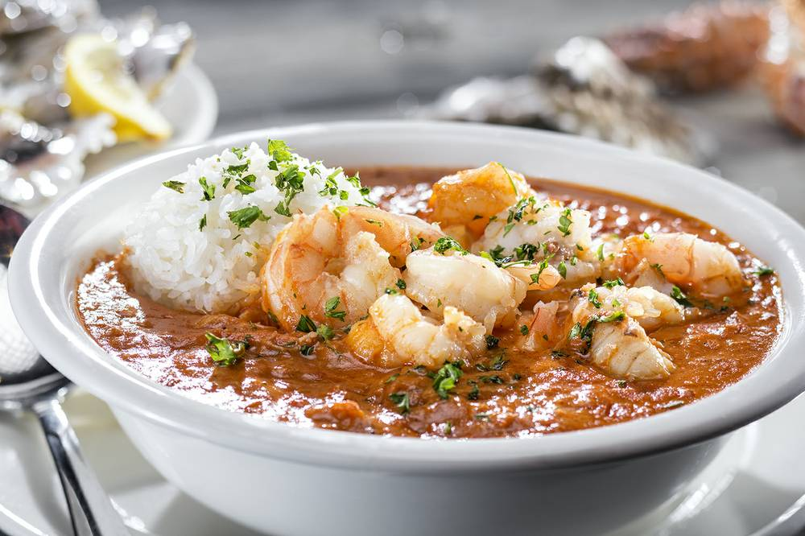

Oyster Bar Pan Roast
Homepage

Description
The hidden gem of any Oyster Bar, this pan roast is a creamy seafood bisque that goes perfect with a side of rice.
Ingredients
- 1 lb peeled and deveined shrimp
- 1/2 lb crab meat
- seasoning blend
- 1 tbsp Old Bay
- 1/2 tbsp Tony's Creole
- 1 tsp paprika
- 1 tsp black pepper
- 1/2 tsp cayenne
- 1 cup celery (diced)
- 1 cup yellow onion (diced)
- 3 tbsp garlic clove (minced)
- 1 1/2 cup the Holy Trinity
- 1/2 cup celery
- 1/2 cup yellow onion
- 1/2 cup green bell pepper
- 2-3 large basil leaves
- 6 tbsp salted butter
- 150 ml heavy cream
- 1 2/3 cup chicken stock
- 1 1/2 cup tomato sauce
- 1 1/2 cup long grain rice
- 1/2 cup clam juice
- 1 tsp Worcestershire
Steps
- Melt 3 tbsp of butter in a pot on medium low heat and add the celery, onion, garlic, a pinch of salt, and sweat until translucent.
- Add the chicken stock, tomato sauce, and jasmine rice. Stir everything together, turn up the heat and simmer until the rice has softened (about 10 to 15 minutes).
- Transfer the soup to a blender, or use a stick blender in the pot. Add the heavy cream and basil, blend until the rice is emulsified.
- Melt 3 tbsp of butter in a sauce pan on medium low heat. Then, add the shrimp, and continue to stir until its cooked through, followed by the oysters and clams. Season to taste with salt and pepper.
- Clean out the pot, and return to the stove. Melt 2 tbsp butter and add the holy trinity, a pinch of salt, and sweat until translucent.
- Add the spice blend, continue to sweate for another minute to warm up the spices. Add the clam juice, Worcestershire sauce, blended soup base, and cooked sea food. Season with salt and pepper to taste.
- Serve in a bowl with a ball of rice.